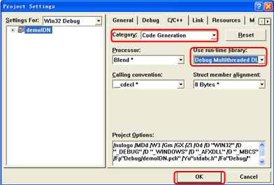
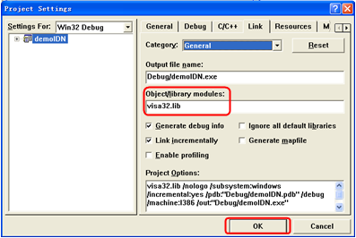
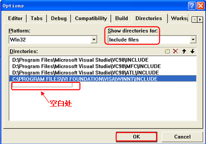
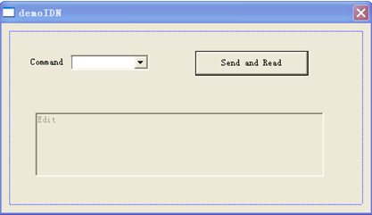
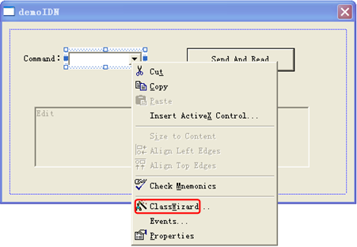
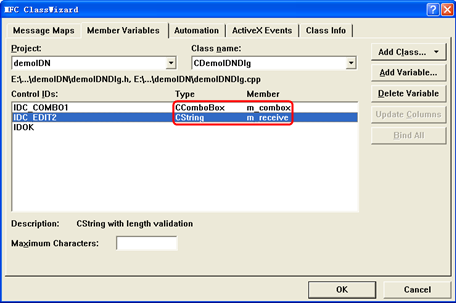
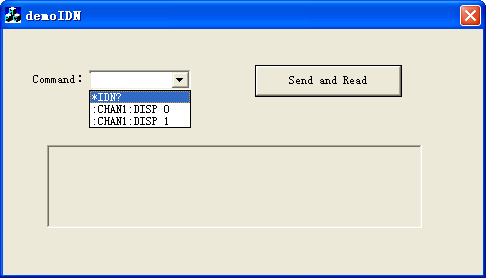

Visual C++ 6.0 编程实例
进入Visual C++6.0编程环境，按照下列步骤操作：
1. 建立一个基于对话框的MFC的工程。
2. 打开Project→Settings 中的C/C++选项卡，在Category中选Code Generation，在Use run-time library中选Debug Multithreaded DLL。点OK关闭对话框。

3. 打开Project→Settings 中的Link选项卡，在Object/library modules中手动添加visa32.lib。

4. 打开Tools→Options 中的Directories选项卡。
在Show directories for中选择Include files，双击Directories选框中的空白处添加Include的路径：C:\Program Files\IVI Foundation\VISA\WinNT\include。
在Show directories for中选择Library files，双击Directories选框中的空白处添加Lib的路径：C:\Program Files\IVI Foundation\VISA\WinNT\lib\msc。

注：至此，VISA库添加完毕。
5. 添加Text、Com box、Button和Edit控件。布局如下所示：

6. 修改控件属性。
1) 将Text命名为“Command”。
2) 打开Com box属性中的Data项，手动输入三个命令：
*IDN?
:CHAN1:DISP 1
:CHAN1:DISP 0
3) 打开Edit
属性中的General项，选中Disable。
4) 将Button命名为Send
and Read。
7. 为Com box和Edit控件分别添加变量m_combox和m_receive。


8. 添加代码。
双击“Send and Read”进入编程环境，首先请在头文件中对visa库“#include <visa.h>”进行声明，然后添加如下代码：
ViSession defaultRM, vi;
char buf [256] = {0};
CString s,strTemp;
char* stringTemp;
ViChar buffer [VI_FIND_BUFLEN];
ViRsrc matches=buffer;
ViUInt32 nmatches;
ViFindList list;
viOpenDefaultRM (&defaultRM);
//获取visa的USB资源
viFindRsrc(defaultRM, "USB?*", &list,&nmatches, matches);
viOpen (defaultRM,matches,VI_NULL,VI_NULL,&vi);
viPrintf (vi, "*RST\n");
//发送接收到的命令
m_combox.GetLBText(m_combox.GetCurSel(),strTemp);
strTemp = strTemp + "\n";
stringTemp = (char *)(LPCTSTR)strTemp;
viPrintf (vi,stringTemp);
//读取结果
viScanf (vi, "%t\n", &buf);
//将结果显示出来
UpdateData (TRUE);
m_receive = buf;
UpdateData (FALSE);
viClose (vi);
viClose (defaultRM);
9. 保存、编译和运行工程，可得到单个可执行文件。当示波器与PC成功相连时，选择一条命令如*IDN?，按“Send and Read”按键，将显示示波器返回的结果。
